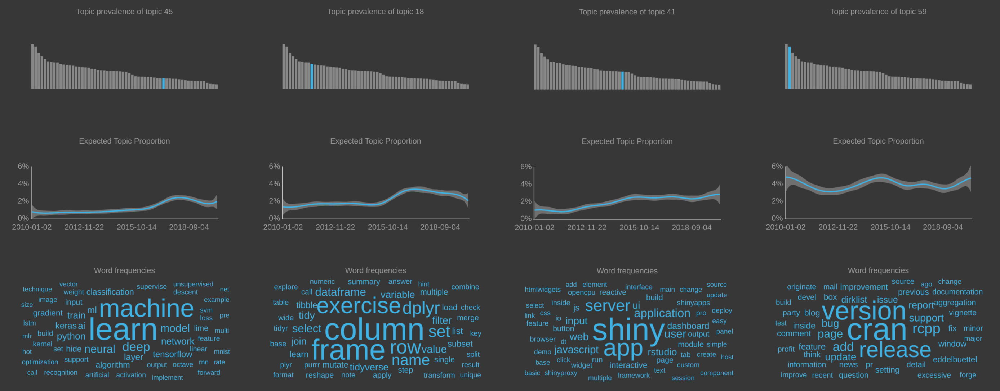

Analysing 10+ Years of R Blogs
An article by Julia Silge about Structural Topic Models gave the inspiration for this project. I have often struggled to extract meaningful information from free text documents but Julia's results looked very convincing. Additionally the chosen topic model algorithm can take advantage of additional meta information associated for each document. The blog article by Andrea De Angelis explained how to exploit publication dates of documents and show topic trends over time. After some digging I found the vignette of the stminsights package which provides functionality to extract topic correlation graphs from the trained structural topic model. All these resources put enough ideas in my head to create this app.
Data
I am a fond reader of blog articles published on R-Bloggers.com. It is an aggregator for blogs about R and has been around for more than a decade. I thought it would be very interesting to see how the R scene has developed over the last 10 years. What topics were talked about in the past, what are people writing about today? Would we see the rise of Shiny, the tidyverse, Rmarkdown, CRAN releases, conference announcements? I scraped the blog data from R-Bloggers from their public archives using the super convenient rvest package. The process is split into three phases to allow me later to change my mind about the particular processing of articles.
- Obtain a list of links to articles published on R-Bloggers
- Download each article from the link collection
- parse each document and combined them into a single dataframe
For each document I also collected meta information such as blog title, publication date, author and URLs to the original blog. In total I collected more than 30,000 articles published as early as Jan 2010.
For the ongoing data refresh I download the R-Blogger RSS feeds every day using a script running in a Docker container on AWS on a daily schedule. The RSS feed is a XML file that contains the latest 25 articles published on the website. At the end of each month a second script in a second container combines the articles in all collected feeds with the 30,000 scraped articles and refreshes the topic model behind this application.
Topic Model
I followed Julia Silge's methodology to determine the optimal number of topics. The process involved trainined several models with varying number of topics and then infer a reasonable topic number from a variety of diagnostic plots. The training took hours to complete, I let the machine run over night despite parallelising the computation.
The topic models are generated using the stm package. Papers on the topic can be found here. Some code from the tidystm package was used to transform STM outputs into tidy format.
Did it work?
So did it actually work? Did the topic model identify relevant R trends? I think it did. Here are the results for the topics about (deep) machine learning, the rise of the tidyverse (dplyr), the popularity of Shiny and the interest about CRAN releases. Pretty good for an unsupervised method. Click on the image to enlarge.
{kind=link}
Application
I like beautiful data products and so I used HTML templates to create a unique look for this Shiny application. The template is called Titan and is freely available. There was a bit more JavaScript foo necessary for the network visualisation.
The code is structured using Shiny modules.
Deployment
The development environment of this project is a Rocker based Docker container running the Open Source version of RStudio Server. Docker allows to control all aspects of the development environment, i.e. operating system, system packages and R version. The versions of R packages are tracked using the renv package. This setup intends to assure reproducibility of this app.
All code is on github and also available as a public RStudio Cloud project.